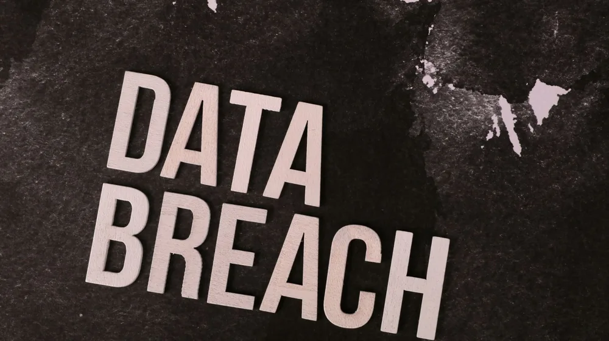

이메일 피싱, 딱 3가지로 구별하는 법: 놓치면 돈 잃는 치명적 실수 막으세요!
사진: Ann H / Pexels (무료 이미지, 출처 표기)
매일 수많은 이메일이 오고 가는 디지털 세상에서 피싱 사기는 우리의 돈과 개인 정보를 노리는 가장 흔한 위협 중 하나입니다. 혹시 은행이나 유명 기업을 사칭한 이메일을 받고 잠시라도 혼란스러웠던 경험이 있으신가요? 최근에는 수법이 매우 정교해져 전문가도 속아 넘어가는 사례가 늘고 있습니다.
이 글에서는 복잡하고 어렵게만 느껴지는 이메일 피싱을 단 3가지 핵심 요소로 쉽고 빠르게 구별하는 방법을 알려드립니다. 이 체크리스트만 익히면 피싱 메일의 위험에서 벗어나 소중한 자산을 안전하게 지킬 수 있을 것입니다.
이메일 피싱, 왜 이렇게 늘어날까요?

피싱(Phishing)은 개인 정보(Private Data)와 낚시(Fishing)의 합성어로, 사용자에게 가짜 웹사이트 링크나 악성 첨부파일을 이메일로 보내 정보를 탈취하는 사기 수법입니다. 최근 피싱 공격은 특정 대상을 노리는 스피어 피싱(Spear Phishing)이나 대기업 CEO를 사칭하는 BEC(Business Email Compromise) 공격 등으로 진화하며 더욱 교묘해지고 있습니다.
과거에는 어색한 번역이나 조악한 이미지 등으로 쉽게 구별할 수 있었지만, 이제는 정상적인 이메일과 거의 흡사하게 제작되어 일반인이 육안으로 구분하기 매우 어려워졌습니다. 개인의 금융 정보나 회사 기밀 정보 등 민감한 데이터를 노리는 만큼 각별한 주의가 필요합니다.
이메일 피싱 구별, 이 3가지 핵심만 기억하세요
피싱 이메일을 구별하는 가장 효과적인 방법은 몇 가지 핵심적인 특징을 숙지하고 의심하는 습관을 들이는 것입니다. 다음 체크리스트를 통해 위험한 이메일을 걸러낼 수 있습니다.
-
1. 발신자 정보와 이메일 주소를 면밀히 확인하세요
가장 먼저 발신자의 이메일 주소를 확인해야 합니다. 보낸 사람 이름이 은행이나 유명 기업으로 되어 있더라도 실제 이메일 주소는 이상한 문자의 조합이거나 공식 도메인과 미묘하게 다를 수 있습니다. 예를 들어,
bank@official.com대신bank@officia1.com(알파벳 l 대신 숫자 1)과 같이 교묘하게 변경하는 경우가 많습니다.반드시 발신자 이름 옆에 표시된 실제 이메일 주소를 클릭하거나 마우스를 올려 정확한 주소를 확인해야 합니다. 또한, 아는 사람에게서 온 메일이더라도 평소와 다른 말투나 내용이라면 의심하고 직접 연락해 확인하는 것이 좋습니다.
-
2. 의심스러운 첨부파일과 링크는 절대 클릭 금지
피싱 이메일은 주로 악성코드나 랜섬웨어(Ransomware, 사용자 파일을 암호화하여 금전을 요구하는 악성 프로그램)가 포함된 첨부파일이나 가짜 웹사이트로 연결되는 링크를 통해 공격합니다. 출처가 불분명한 첨부파일(특히 .exe, .zip, .scr 등 실행 파일 형식)은 절대 열지 말아야 합니다.
이메일 내 링크를 클릭하기 전에는 반드시 마우스 커서를 링크 위에 올려 실제 URL 주소를 확인하는 습관을 들여야 합니다. 이때 표시되는 주소가 평소 이용하던 사이트의 공식 주소와 다른 경우, 절대로 클릭해서는 안 됩니다. 해당 기관의 공식 웹사이트로 직접 접속해 정보를 확인하는 것이 가장 안전합니다.
-
3. 메일 내용과 문맥을 꼼꼼히 살피고 긴급 요청에 주의하세요
피싱 메일은 종종 비정상적인 요구를 하거나 심리적 압박을 가하는 특징이 있습니다. '계정이 잠깁니다', '즉시 비밀번호를 변경하세요', '사기 피해를 막으려면 지금 조치하세요' 등 긴급한 상황을 가장하여 개인 정보를 입력하게 유도합니다.
또한, 문법 오류, 어색한 번역체, 로고나 서식의 품질 저하 등 비전문적인 요소가 발견된다면 피싱 메일일 가능성이 높습니다. 돈을 송금하거나 개인 정보를 입력하라는 비정상적인 요청이 있다면 반드시 해당 기관에 직접 문의하여 사실 여부를 확인해야 합니다.
피싱 메일에 이미 속았다면? 이렇게 대처하세요
만약 실수로 피싱 메일에 속아 개인 정보를 입력했거나 악성 파일을 다운로드했다면, 당황하지 않고 즉시 다음 조치들을 취해야 합니다.
- **인터넷 연결 끊기**: 즉시 컴퓨터의 인터넷 연결을 끊어 추가적인 정보 유출이나 악성코드 확산을 막습니다.
- **비밀번호 변경**: 금융 서비스, 포털 사이트, 주요 웹사이트 등 입력했거나 연관된 모든 계정의 비밀번호를 즉시 변경합니다. 이 과정은 다른 기기나 안전한 환경에서 진행하는 것이 좋습니다.
- **금융 기관 및 카드사에 신고**: 은행 계좌 정보나 카드 정보를 입력했다면 해당 금융 기관이나 카드사에 즉시 연락하여 계좌 지급 정지 및 카드 재발급을 요청합니다.
- **한국인터넷진흥원(KISA)에 신고**: 118 상담센터 또는 KISA 웹사이트(www.kisa.or.kr)를 통해 피싱 피해를 신고하고 전문가의 도움을 받으세요. (2024년 5월 기준)
- **악성코드 검사 및 삭제**: 신뢰할 수 있는 백신 프로그램으로 전체 시스템을 정밀 검사하고 발견된 악성코드를 제거합니다.
알아두면 유용한 피싱 예방 수칙 및 보고처
피싱 피해를 예방하기 위해서는 개인의 주의와 함께 몇 가지 보안 수칙을 생활화하는 것이 중요합니다.
피싱 사기는 끊임없이 진화하지만, 핵심 구별법과 예방 수칙을 잘 지킨다면 충분히 피해를 막을 수 있습니다. 늘 새로운 위협에 대한 정보를 습득하고, 의심스러운 상황에서는 일단 멈추고 확인하는 습관을 들이는 것이 중요합니다. 정확한 사항은 한국인터넷진흥원(KISA) 등 공식 기관에서 다시 확인하시길 권장합니다.
🔗 이 글도 함께 보면 좋아요: 포토샵 유료 구독 없이도 전문가처럼? 무료 이미지 편집 프로그램 5가지 비교